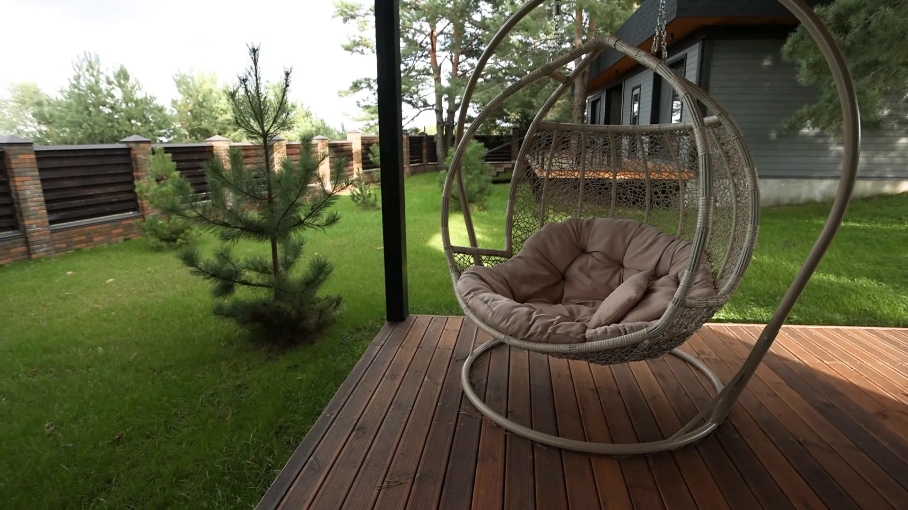

A Quote After a Walkthrough
We see the lawn, the beds, and the tree cover in person, then put a no-obligation price in writing before anything starts.

At Big Easy Lawn Care, we look after Covington homes and businesses on the Northshore, with mowing, trimming, mulching, cleanups, landscaping, and outdoor living projects. Each visit is planned around what yards here deal with: shade from old live oaks and tall pines, beds that need fresh mulch, and hard rain that leaves low spots soggy.
Every Covington lawn care visit is backed by a free consultation and a no-obligation quote, carried out by a fully insured lawn professional, and covered by our satisfaction guarantee. You choose a single visit or an ongoing program for a home or a business, then manage the schedule and payments online.
We see the lawn, the beds, and the tree cover in person, then put a no-obligation price in writing before anything starts.
A fully insured lawn professional handles your property and stays responsible for the job until the yard is finished.
Book one round of mowing and weed-eating to catch up, or an ongoing maintenance program that keeps the yard on a steady rhythm.
Residential lawns and commercial grounds both fit our schedule, and each plan is scoped to the size and use of the site.
Check upcoming visits, pay your bill, and request an extra service from a phone or a web browser without waiting on a callback.
Our satisfaction guarantee means a missed edge or an untidy bed gets fixed. Point it out and we come back to put it right.
Covington families hire a lawn service because a wooded Northshore yard asks for more than a quick mow. Needles and leaves bury beds, grass thins out under big canopies, and soggy spots linger after storms, so the work stacks up quickly for anyone juggling a job, a family, and a busy week.
Lawn service in Covington, LA comes in three families: lawn and yard maintenance, covering mowing, trimming, mulching, weed cutting, pressure washing, and hauling; landscaping, from new beds and drainage to restoring a worn yard; and outdoor living, such as pergolas and decks. Every option begins with a free estimate at your property.

Routine care that keeps a Covington lawn cut, edged, and clear of needles and debris through the growing season.

Bed design, plantings, and fixes for drainage or tired ground when a yard needs to be reshaped, not just maintained.
Explore Landscaping
Decks, pergolas, and outdoor rooms that make a shaded, tree-lined backyard a place to spend the evening.
Explore Outdoor LivingA Covington yard is ready for professional lawn care when puddles sit for days after a storm, when bare dirt spreads out from the base of shade trees, or when the mulch in your beds has thinned to almost nothing. All three tend to get worse each season they are left alone.
Low spots that hold water are more than a soggy shoe. LSU AgCenter warns that standing water can start producing mosquitoes within three to five days.
Dirt spreading out under a big tree means the grass is losing its fight for light and water. Mowing higher helps, and the darkest spots may need mulch instead.
Organic mulch breaks down over time. Once soil shows through, weed seeds sprout more easily, and LSU AgCenter notes mulch also stops rain splashing soil fungus onto plants.
Pines, oaks, and rivers shape lawn care in Covington because so many yards grow under a heavy canopy in a town set between three rivers. Grass under trees competes for light and water, so it needs a taller cut, lighter feeding, and closer attention to drainage than an open, sunny lot would.

A local lawn care company matters for Covington yards because the same Gulf heat, humidity, and downpours shape every lawn we look after on both shores. We are locally owned, we quote only after seeing the property, every job is done by an insured professional, and our satisfaction guarantee stands behind each visit.
We are a locally owned business, with our office on Magazine Street in New Orleans.
Your quote reflects your actual trees, beds, and drainage, not a guess from a satellite photo.
A fully insured professional does the work, and our guarantee stands behind the result.
Shift a visit or add a cleanup online when a storm rolls across the lake.
After you book lawn service in Covington, we schedule a free consultation at the property and send a no-obligation quote. Once you approve it, a fully insured lawn professional does the agreed work, and from then on you track visits, pay invoices, and request extra services from your phone or a web browser.
We check the canopy, the beds, the low spots, and any ditch or gate, then write a clear quote.
Your insured lawn professional handles the agreed tasks from the first edge to the last bed.
Add a needle cleanup or fresh mulch online when the trees drop more than usual.

Before calling about yard care, Covington homeowners should choose how often they want service, decide what to do with the shadiest patches of lawn, and note any drainage trouble spots. Settling those three points ahead of time makes the free quote more accurate and the first visit more useful.
We generally recommend weekly or bi-weekly service during peak growing seasons, with one-time visits for catching up.
Where turf keeps failing under trees, a mulched bed may serve better. Our lawn mulching service can take over those spots.
Walk the yard after a heavy rain and mark the wet areas, so we can judge whether a landscape restoration belongs in the plan.
Beyond regular mowing, Covington lawns can get mulching, trimming, cleanup and hauling, and landscape restoration from the same team. On the Northshore we also work in Mandeville, Madisonville, and Abita Springs, and across the lake in New Orleans, Metairie, Kenner, Harahan, River Ridge, and Gretna.
Covington began in 1813, when merchant John Wharton Collins laid out a town he called Wharton on the east bank of the Bogue Falaya. Louisiana renamed it Covington in 1816, and it later became the seat of St. Tammany Parish.
Downtown Covington is walkable, shaded, and close to the water. These are some favorite ways to spend a day in town.
Three Northshore neighbors sit close to Covington, and our service continues across the lake to six south shore communities.
John Wharton Collins was unhappy when the state swapped his grandfather's name for that of General Leonard Covington, who died in the War of 1812. Here are a few more facts about the town.
St. Tammany Parish runs STAR Transit, a demand response service open to every parish resident. Riders call ahead for curb-to-curb trips on weekdays, and the Tammany Trace gives walkers and cyclists a paved route east from downtown.
Covington homeowners asking about lawn care and pine straw mostly want to know how to use the needles their trees drop, how much straw a bed needs, how to keep weeds out of beds, how high to mow in shade, and why pooled water after rain matters. These are the answers we give most often.
Pine straw is the dried needles that fall from pine trees, raked up and sold in bales as mulch. LSU AgCenter calls it an excellent mulch choice: it cuts down on weeding and watering, and adds organic matter to the soil as it breaks down, which suits the many wooded yards around Covington.
Yes. LSU AgCenter rates pine straw as an excellent mulch for Louisiana beds, helping conserve soil moisture, reduce weed growth, slow erosion, and prevent soil compaction. Start with about 3 inches around shrubs and trees and slightly less around bedding plants and perennials, and keep it from piling up against tree trunks.
LSU AgCenter says a 25-pound, 3-cubic-foot bale covers about 50 square feet at a depth of 3 inches. Bales sold in Louisiana weigh 25 to 51 pounds and hold 3 to 6 cubic feet, so check the size. When you are only topping up an inch, one bale goes about three times as far.
Pine straw breaks down gradually, which is how it adds organic matter to the soil. Because of that, LSU AgCenter suggests refreshing it once or twice a year with about an inch of new straw. Under Covington pines, needles that drop on their own can top up beds between those refreshes.
Cover the soil with mulch. LSU AgCenter explains that most weed seeds need light to sprout, so mulch that blocks light stops them, and it rates pine straw as an excellent mulch that cuts down on weeding. Refresh it once or twice a year with about an inch of new straw, which needles from Covington pines can help supply.
Higher than you would in full sun. LSU AgCenter advises mowing shaded grass higher, 3 to 3 1/2 inches for St. Augustine, feeding it less, and watering more, because tree roots compete for moisture. Under Covington oaks and pines, the taller cut helps the turf hold on, and the darkest spots may do better as mulch.
Yes. LSU AgCenter warns that standing water can start producing mosquitoes within three to five days, so pooled water in a Covington yard is worth fixing quickly. It suggests filling holes and low spots with soil or sand, or digging a shallow channel so water flows away, and persistent pooling may call for a proper drainage fix.
Covington is in St. Tammany Parish and serves as the parish seat, a role it took on after being laid out in 1813 on the east bank of the Bogue Falaya and chartered by Louisiana in 1816. The 2020 Census counted 11,564 people living in the city.
Join our satisfied and happy customers. Get your free lawn care assessment today.